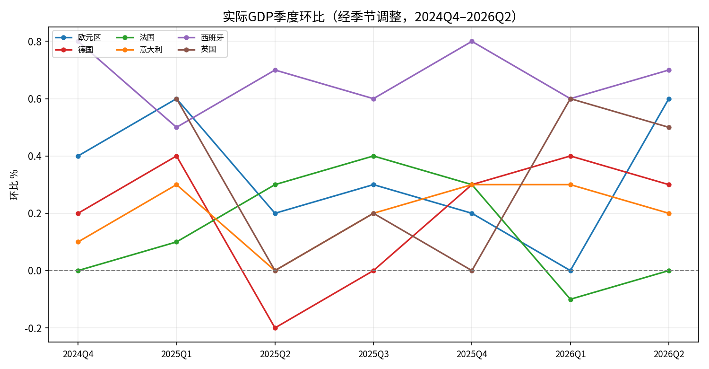
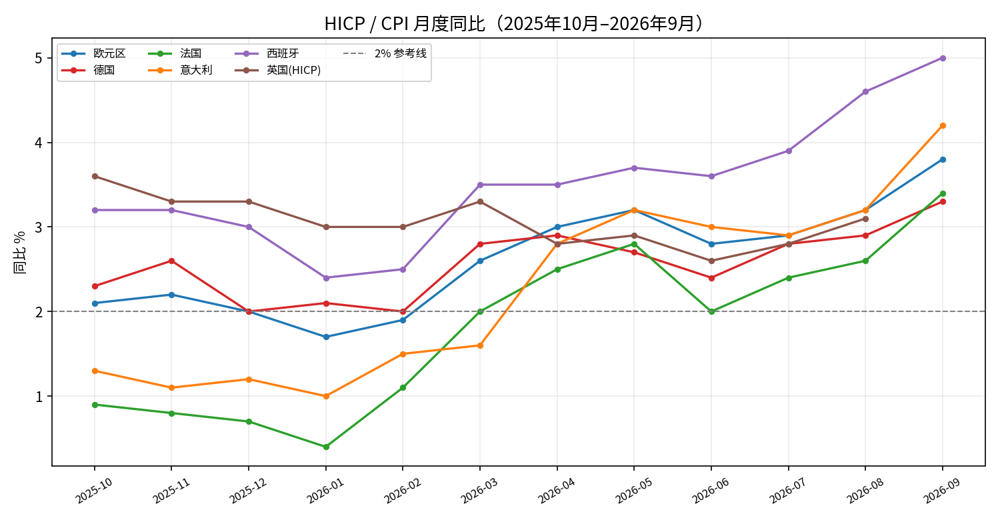
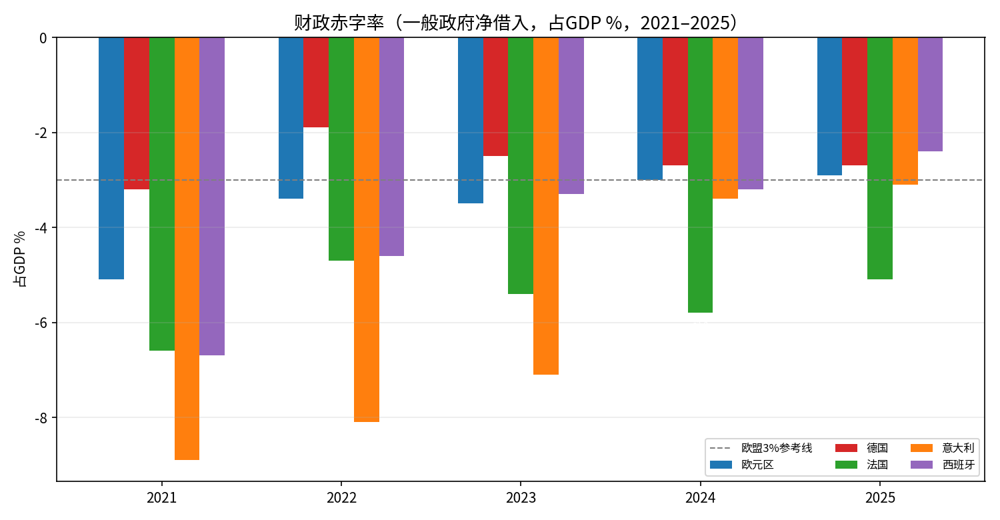
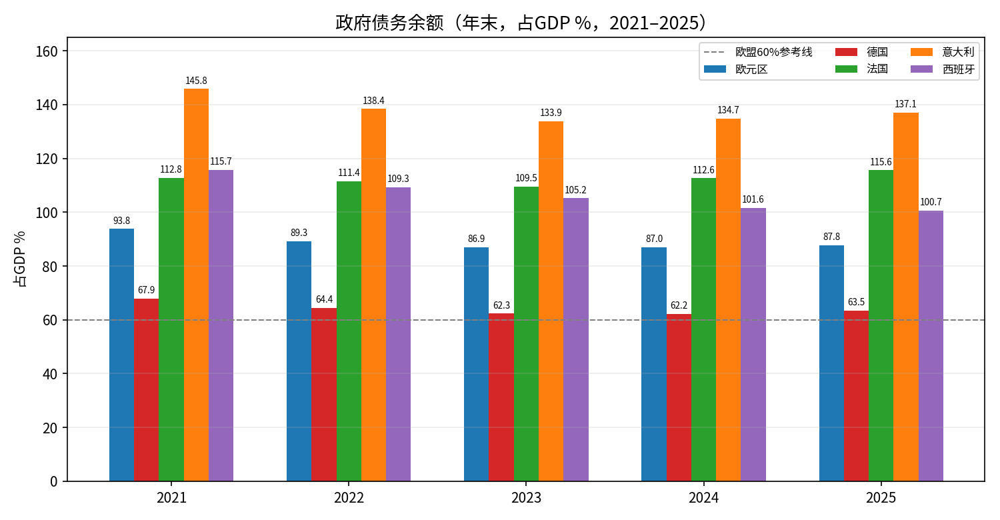
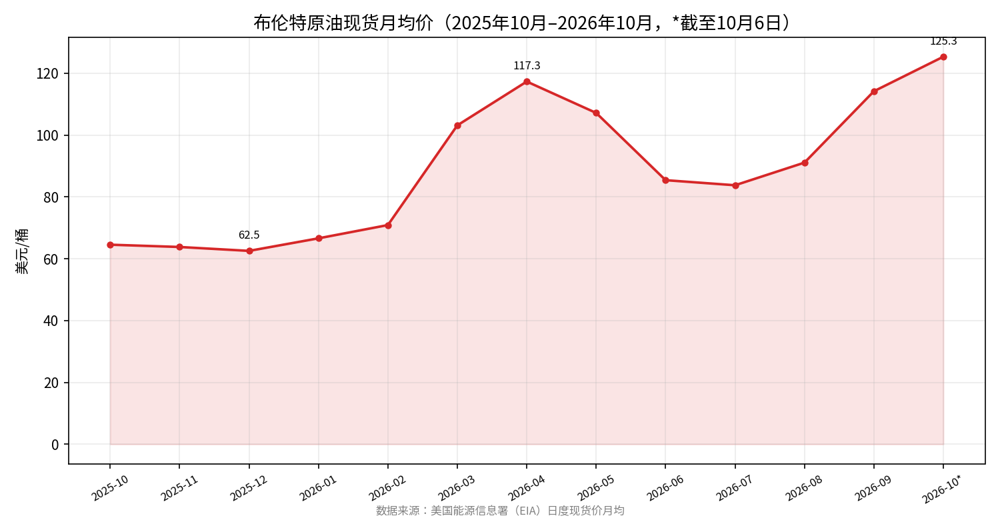
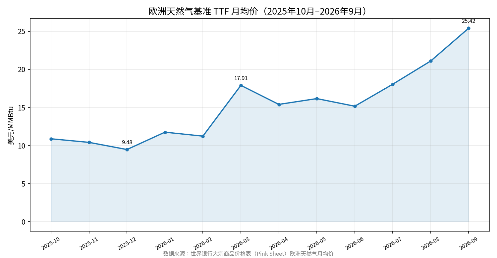
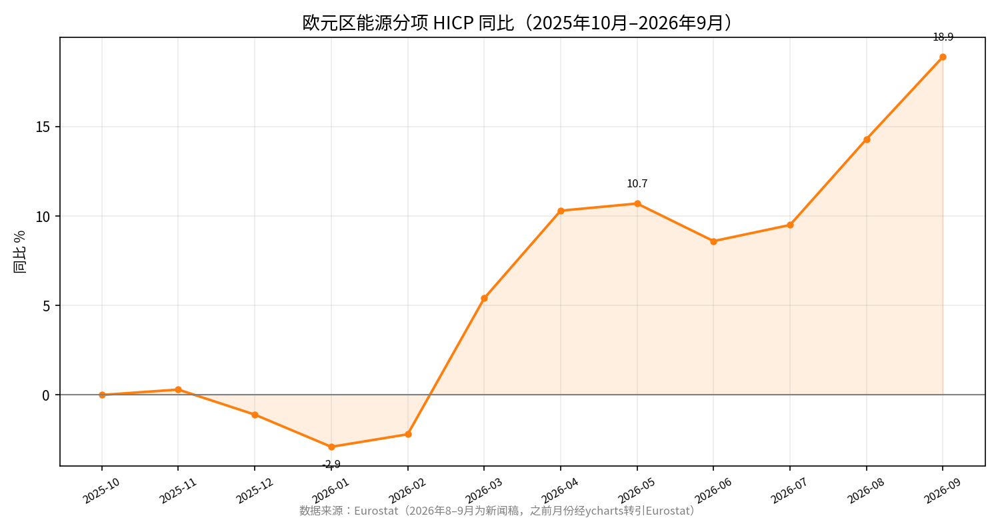
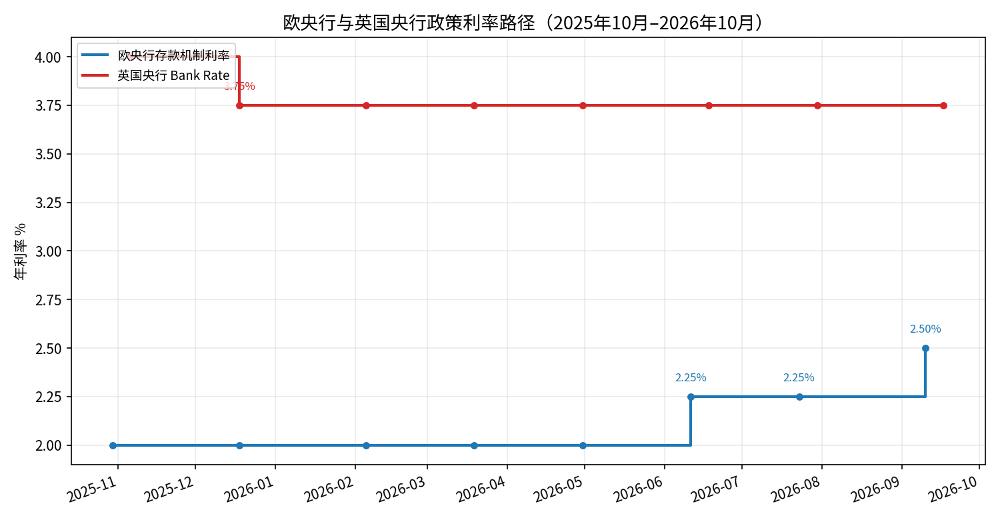

一、宏观经济
1.1 实际GDP季度环比（%，经季节调整）

| 季度 | 欧元区 | 德国 | 法国 | 意大利 | 西班牙 | 英国 |
|---|---|---|---|---|---|---|
| 2024Q4 | 0.4 | 0.2 | 0.0 | 0.1 | 0.8 | 未找到可靠来源 |
| 2025Q1 | 0.6 | 0.4 | 0.1 | 0.3 | 0.5 | 0.6 |
| 2025Q2 | 0.2 | -0.2 | 0.3 | 0.0 | 0.7 | 0.0 |
| 2025Q3 | 0.3 | 0.0 | 0.4 | 0.2 | 0.6 | 0.2 |
| 2025Q4 | 0.2 | 0.3 | 0.3 | 0.3 | 0.8 | 0.0 |
| 2026Q1 | 0.0 | 0.4 | -0.1 | 0.3 | 0.6 | 0.6 |
| 2026Q2 | 0.6 | 0.3 | 0.0 | 0.2 | 0.7 | 0.5 |
| 2026Q3 | 尚未发布（Eurostat初值通常10月30日左右发布） | |||||
来源：欧元区及德法意西为Eurostat euro-indicators新闻稿（最新修正值；2026Q2为2026年9月最终修正值）；英国为ONS（2026年9月30日季度国民账户口径）。
1.2 实际GDP季度同比（%，经季节调整）
| 季度 | 欧元区 | 德国 | 法国 | 意大利 | 西班牙 | 英国 |
|---|---|---|---|---|---|---|
| 2024Q4 | 1.3 | -0.2 | 0.6 | 0.5 | 3.7 | 未找到可靠来源 |
| 2025Q1 | 1.6 | 0.3 | 0.7 | 0.7 | 3.0 | |
| 2025Q2 | 1.6 | 0.4 | 0.8 | 0.5 | 2.8 | |
| 2025Q3 | 1.2 | 0.3 | 0.8 | 0.7 | 2.7 | |
| 2025Q4 | 1.1 | 0.3 | 1.1 | 0.8 | 2.7 | |
| 2026Q1 | 0.5 | 0.6 | 0.8 | 0.8 | 2.7 | |
| 2026Q2 | 1.2 | 1.0 | 0.7 | 1.0 | 2.6 | 1.4 |
来源：Eurostat（欧元区2026Q2为9月最终修正值；法、意2026Q2为7月30日初值口径）；德国Destatis（2026年8月修正）；西班牙INE（最终修正值）；英国ONS（2026年9月30日）。口径分歧：西班牙2026Q2同比INE最终修正值2.6%，Eurostat初值表2.7%，以INE为准。
1.3 年度实际GDP增速（%，已找到可靠来源的部分）
| 年份 | 德国 | 英国 |
|---|---|---|
| 2024 | 未找到可靠来源 | 1.0（2026年6月修正口径；此前为1.1） |
| 2025 | 0.2（Destatis最新修正） | 1.2（ONS 2026年9月30日口径；此前口径曾为1.3、1.4） |
来源：德国Destatis；英国ONS。欧元区及法、意、西2024、2025年度增速未找到可靠来源。
1.4 HICP / CPI 月度同比（%，2025年10月—2026年9月）

| 月份 | 欧元区 | 德国 | 法国 | 意大利 | 西班牙 | 英国HICP |
|---|---|---|---|---|---|---|
| 2025-10 | 2.1 | 2.3 | 0.9 | 1.3 | 3.2 | 3.6 |
| 2025-11 | 2.2 | 2.6 | 0.8 | 1.1 | 3.2 | 3.3 |
| 2025-12 | 2.0 | 2.0 | 0.7 | 1.2 | 3.0 | 3.3 |
| 2026-01 | 1.7 | 2.1 | 0.4 | 1.0 | 2.4 | 3.0 |
| 2026-02 | 1.9 | 2.0 | 1.1 | 1.5 | 2.5 | 3.0 |
| 2026-03 | 2.6 | 2.8 | 2.0 | 1.6 | 3.5 | 3.3 |
| 2026-04 | 3.0 | 2.9 | 2.5 | 2.8 | 3.5 | 2.8 |
| 2026-05 | 3.2 | 2.7 | 2.8 | 3.2 | 3.7 | 2.9 |
| 2026-06 | 2.8 | 2.4 | 2.0 | 3.0 | 3.6 | 2.6 |
| 2026-07 | 2.9 | 2.8 | 2.4 | 2.9 | 3.9 | 2.8 |
| 2026-08 | 3.2 | 2.9 | 2.6 | 3.2 | 4.6 | 3.1 |
| 2026-09 | 3.8 | 3.3 | 3.4 | 4.2 | 5.0 | 尚未发布 |
来源：欧元区为Eurostat（2026年10月16日终值）；德国Destatis（2026年10月13日终值）；法国INSEE（2026年10月15日终值）；意大利Istat（2026年10月16日终值）；西班牙为Eurostat终值；英国ONS（英国9月CPI定于10月21日发布）。口径分歧：法国8月HICP一份报道引述INSEE口径2.7%，Eurostat终值2.6%，以Eurostat为准。另：法国9月本国CPI初值3.0%（8月2.4%）；意大利9月本国NIC与HICP均为4.2%；西班牙9月本国CPI初值4.9%（8月4.3%）；英国8月本国CPI为3.1%（7月2.9%）。
1.5 核心通胀（同比，%，最新值）
| 经济体 | 口径 | 数值 | 时间点 | 来源 |
|---|---|---|---|---|
| 欧元区 | 不含能源、食品、酒精、烟草 | 2.5 | 2026年9月（8月2.4；2026年1月2.2） | Eurostat |
| 德国 | 不含食品、能源 | 2.4 | 2026年9月（8月亦为2.4） | Destatis |
| 法国 | — | 未找到可靠来源 | — | |
| 意大利 | 不含能源和新鲜食品 | 1.6 | 2026年9月（8月1.5） | Istat |
| 西班牙 | 本国CPI核心口径 | 3.1 | 2026年9月初值（8月2.9） | INE |
| 英国 | 不含能源、食品、酒精、烟草 | 2.6 | 2026年8月 | ONS |
注：各经济体核心通胀的完整12个月序列未找到可靠来源。
1.6 失业率（%，最新值）
| 经济体 | 口径 | 最新值 | 来源 |
|---|---|---|---|
| 欧元区 | 季调月度 | 2026年8月 6.4（5—7月均为6.4；2025年8月6.3） | Eurostat（2026年10月1日） |
| 德国 | 联邦劳工局登记失业率（季调） | 2026年9月 6.4（失业人数301万，环比+1.2万） | 联邦劳工局（路透2026年9月30日报道） |
| 法国 | ILO口径（季度） | 2026年Q2 8.3（环比+0.2个百分点） | INSEE |
| 意大利 | 月度 | 2026年7月 5.8（6月5.7；8月未找到） | Istat |
| 西班牙 | Eurostat季调（月度） | 2026年8月 10.0（2025年8月10.5） | Eurostat |
| 西班牙 | INE劳动力调查EPA（季度） | 2026年Q2 9.87（Q1 10.83） | INE |
| 英国 | 3个月滚动 | 2026年5—7月 4.9（4—6月4.9；一年前4.7） | ONS |
注：德国、法国的Eurostat协调口径月度失业率序列未找到可靠来源；各经济体完整12个月序列未找到。
1.7 工资增速（同比）
| 经济体 | 指标 | 数值 | 时间点 | 来源 |
|---|---|---|---|---|
| 欧元区 | 小时劳动力成本 | +3.1%（工资薪金+3.0%，非工资成本+3.2%；2026年Q1 +3.2%，2025年Q2 +4.1%） | 2026年Q2 | Eurostat（2026年9月） |
| 德国 | 名义毛工资 / 实际工资 | 名义+4.1%，实际+1.5% | 2026年Q2 | Destatis（经二级来源转述） |
| 法国 | 小时工资（劳动力成本指数） | +2.4%（Q1 +2.1%）；小时劳动力成本+2.5% | 2026年Q2 | INSEE |
| 法国 | 基本月工资SMB | +1.7%（Q1 1.6%，2025年Q4 1.6%） | 2026年Q2 | INSEE |
| 意大利 | 协议小时工资 | 2026年6月+2.4%；Q1平均+2.6% | 2026年Q2/Q1 | Istat（2026年7月29日） |
| 西班牙 | 人均劳动力成本QLCS | +4.0%（3,388.15欧元/人/月） | 2026年Q2 | INE（2026年9月17日） |
| 西班牙 | 小时劳动力成本HLCI（季调） | +4.2%（未季调+4.8%） | 2026年Q2 | INE（2026年9月8日） |
| 英国 | 平均周薪AWE（3个月平均） | 名义不含奖金+3.5%、实际+0.8%；含奖金名义+3.9%、实际+1.1% | 截至2026年7月的3个月 | ONS |
1.8 制造业 / 服务业 PMI（S&P Global，50为荣枯线）
| 经济体 | 指标 | 2026-07 | 2026-08 | 2026-09（终值） |
|---|---|---|---|---|
| 欧元区 | 综合 / 制造业 / 服务业 | 52.0 / 未找到 / 未找到 | 52.0 / 52.7 / 51.6 | 53.1 / 52.9 / 53.0 |
| 德国 | 综合 / 制造业 / 服务业 | 未找到 | 51.8 / 54.3 / 49.7 | 53.8 / 53.9 / 52.9 |
| 法国 | 综合 / 制造业 / 服务业 | 未找到 | 48.5 / 51.1 / 48.0 | 51.1 / 50.6 / 51.2 |
| 意大利 | 综合 / 制造业 / 服务业 | 未找到 | 53.6 / 49.6 / 55.2 | 51.0 / 50.4 / 51.7 |
| 西班牙 | 综合 / 制造业 / 服务业 | — / — / 58.3 | 55.8 / 49.5 / 57.8 | 56.8 / 51.0 / 58.3 |
| 英国 | 综合 / 制造业 / 服务业 | 未找到 | 52.5 / 51.7 / 52.5 | 52.0 / 51.9 / 52.1 |
来源：S&P Global（经路透2026年10月1日、10月5日报道的9月终值）。注：2026年7月及更早月份的各国分项PMI未找到可靠来源。
1.9 机构预测（事实记录）
- ECB 2026年9月员工预测（欧元区）：2026年实际GDP增长0.9%，2027年1.4%，2028年1.5%；HICP年均通胀2026年3.0%，2027年2.5%，2028年2.1%。（来源：ECB）
- ECB 2025年12月预测（欧元区）：HICP 2025年2.1、2026年1.9、2027年1.8、2028年2.0；人均雇员报酬2025年4.0、2026年3.2、2027年2.9、2028年3.0；单位劳动力成本2025年3.3、2026年2.6、2027年2.0、2028年2.1。（来源：ECB官网）
二、财政数据与近期政策
2.1 财政赤字率（一般政府净借入/净贷出，占GDP %，2021—2025）

| 国家/地区 | 2021 | 2022 | 2023 | 2024 | 2025 |
|---|---|---|---|---|---|
| 欧元区（EA20） | -5.1 | -3.4 | -3.5 | -3.0 | -2.9 |
| 德国 | -3.2 | -1.9 | -2.5 | -2.7 | -2.7 |
| 法国 | -6.6 | -4.7 | -5.4 | -5.8 | -5.1 |
| 意大利 | -8.9 | -8.1 | -7.1 | -3.4 | -3.1 |
| 西班牙 | -6.7 | -4.6 | -3.3 | -3.2 | -2.4 |
| 英国（财年，截至次年3月） | 5.0（2021/22） | 4.8（2022/23） | 4.8（2023/24） | 5.2（2024/25，修正值） | 4.2（2025/26，修正值） |
来源：欧盟国家为Eurostat数据集gov_10dd_edpt1（2026年4月22日更新，2026年春季EDP通报口径）；英国为ONS/OBR（财年口径）。注：英国2024/25在2025年9月通报中曾记为5.1%、2025年3月通报曾记为5.3%，属不同修订版本。
2026年预测/目标（标注性质，非实际值）：
- 法国：政府预计2026年赤字5.4%，2027年目标5.0%（2026年10月1日2027年预算案）；无措施情形下2027年赤字约6.4%（Fitch，2026年10月12日）；IMF预计德国2027年赤字升至GDP的4%。
- 意大利：政府目标2026年2.9%、2027年3.4%、2028年3.2%（2026年10月2日多年期财政规划）。
- 西班牙：政府目标2026年2.1%、2027年1.8%（2025年12月，路透）；AIReF（2026年7月）预测2026年2.6%；Funcas（2026年10月）预计2026年2.5%；欧盟委员会（2026年5月）预测2026年2.4%、2027年2.0%。
- 英国：2026/27财年前5个月（4—8月）借款773亿英镑，同比降2.7%，比OBR（2026年3月）预测高81亿英镑（ONS，2026年9月22日）。
2.2 政府债务 / GDP（年末，%，2021—2025）

| 国家/地区 | 2021 | 2022 | 2023 | 2024 | 2025 |
|---|---|---|---|---|---|
| 欧元区（EA20） | 93.8 | 89.3 | 86.9 | 87.0 | 87.8 |
| 德国 | 67.9 | 64.4 | 62.3 | 62.2 | 63.5 |
| 法国 | 112.8 | 111.4 | 109.5 | 112.6 | 115.6 |
| 意大利 | 145.8 | 138.4 | 133.9 | 134.7 | 137.1 |
| 西班牙 | 115.7 | 109.3 | 105.2 | 101.6 | 100.7 |
| 英国（公共部门净债务，不含公共部门银行） | 未找到可靠来源 | 97.2（2022年3月末） | 98.3（2023/24财年末） | 95.8（2025年3月末） | 95.5（2025年12月末）；93.8（2026年8月末，同比-1.3个百分点） |
来源：欧盟国家为Eurostat gov_10dd_edpt1（2026年4月22日更新）；英国为ONS。口径分歧：英国下议院图书馆2026年10月18日更新称2026年8月末净债务为GDP的95.1%（2025年8月93.8%），与ONS 2026年8月通报（93.8%）矛盾，本表采用ONS口径。
2026年已公布季度值：法国2026年一季度117.6%（Eurostat，债务3.5361万亿欧元）、二季度末119%（2026年10月11日报道）；德国2026年一季度64.4%；欧元区2026年一季度88.9%。意大利政府预计债务2026年138.1%、2027年达峰138.5%、2028年137.9%（2026年10月2日）。
2.3 财政收入 / GDP（一般政府总收入，占GDP %，2021—2025）
| 国家/地区 | 2021 | 2022 | 2023 | 2024 | 2025 |
|---|---|---|---|---|---|
| 欧元区（EA20） | 46.9 | 46.5 | 45.8 | 46.4 | 46.9 |
| 德国 | 47.5 | 46.7 | 45.7 | 46.8 | 47.9 |
| 法国 | 52.9 | 53.7 | 51.4 | 51.2 | 52.1 |
| 意大利 | 47.2 | 46.8 | 46.5 | 47.0 | 48.1 |
| 西班牙 | 42.8 | 41.7 | 42.1 | 42.3 | 42.9 |
来源：Eurostat数据集gov_10a_main（2026年7月21日更新）。
2.4 利息支出相关数据
| 国家/地区 | 指标 | 数值 | 来源与时间 |
|---|---|---|---|
| 意大利 | 财产性收入支出（主要为利息）占总支出比 | 2025年：7.6% | Eurostat《Government finance》（2026年4月22日） |
| 西班牙 | 财产性收入支出（主要为利息）占总支出比 | 2025年：5.3% | 同上 |
| 欧元区 | 财产性收入支出（主要为利息）占总支出比 | 2025年：3.8% | 同上 |
| 欧盟 | 财产性收入支出（主要为利息）占总支出比 | 2025年：3.9% | 同上 |
| 意大利 | 利息支出/财政收入 | 2024年：8.3% | Moody's意大利主权信用意见评分卡（2025年11月25日） |
| 意大利 | 利息支出/GDP | 2024年：3.9% | 同上 |
| 意大利 | 政府债务/财政收入 | 2024年：286.6% | 同上 |
| 法国 | 利息支出（绝对额预测） | 2027年预计约910亿欧元 | 2026年10月媒体报道 |
| 英国 | 债务利息支出（绝对额预测） | OBR预计每年超1000亿英镑，至少持续至下个十年 | 《泰晤士报》（2026年10月18日） |
| 德国 | 利息支出占财政收入比时间序列 | 未找到可靠来源 | |
| 法国 | 利息支出占财政收入比时间序列 | 未找到可靠来源 | |
注：Eurostat未在公开文章中单列法国、德国2025年财产性收入支出占比（仅列出占比超5%的国家）。
2.5 主权信用评级（近一年调整情况）
| 国家 | 标普（S&P） | 穆迪（Moody's） | 惠誉（Fitch） |
|---|---|---|---|
| 法国 | 2025年10月：AA-下调至A+，展望稳定 | Aa3；2025年10月展望由稳定调为负面，2026年4月维持；下一次评审2026年10月23日 | 2025年9月：AA-下调至A+，展望稳定；2026年8月28日维持A+/稳定 |
| 意大利 | 2025年4月：BBB上调至BBB+，展望稳定 | 2025年5月展望调为正面；2025年11月28日：Baa3上调至Baa2，展望稳定 | 2025年9月：BBB上调至BBB+，展望稳定；2026年9月维持BBB+/稳定 |
| 西班牙 | 2025年9月：A上调至A+ | 2025年9月：Baa1上调至A3 | 2025年9月26日：A-上调至A，展望稳定；2026年3月13日维持A/稳定 |
| 德国 | AAA/稳定（2026年4月24日确认），近一年无调整 | Aaa/稳定（2026年9月18日确认），近一年无调整 | AAA/稳定（2026年5月15日确认），近一年无调整 |
| 英国 | AA/稳定（2026年4月10日确认），近一年无调整 | Aa3/稳定（2025年11月确认），近一年无调整 | AA-/稳定（2026年8月14日确认），近一年无调整 |
2.6 欧盟《稳定与增长公约》（SGP）/ 超额赤字程序（EDP）状态（截至2026年10月）
- 2025年1月21日，欧盟理事会通过对7个EDP国家的纠正建议：比利时（2027年前纠正）、法国（2029年前纠正）、意大利（2026年前纠正）、马耳他（2027年前纠正）、波兰、斯洛伐克、罗马尼亚。法国净支出名义增长率上限：2025年0.8%、2026—2028年每年1.2%、2029年1.1%。
- 法国：EDP程序中（2024年7月启动）。2025年赤字5.1%（IMF第四条款磋商结论声明，2026年5月21日）。政府目标2029年前将赤字降至3%以下。
- 意大利：EDP程序中。2026年9月22日Istat确认2025年赤字为3.1%，欧盟委员会同日确认意大利将继续处于EDP（待10月21日数据验证）。意大利政府目标2026年赤字2.9%（2019年以来首次低于3%），并寻求2027年中退出EDP；意大利央行2026年10月12日向议会表示，2027—2028年赤字高于3%可能使退出EDP复杂化。
- 西班牙：无现行赤字类EDP（2025年赤字2.4%）。德国：无现行赤字类EDP（2025年赤字2.7%）。
- 马耳他EDP于2026年6月12日关闭；保加利亚EDP于2026年7月启动。
- 2026年10月8—9日欧元集团/10月9日Ecofin（卢森堡）：欧元区财长要求法国通过2027年预算以安抚市场；欧央行行长拉加德表示欧央行有工具应对无序市场动态，但须满足明确资格标准（包括遵守欧盟财政规则、不处于EDP）。意大利国家保障条款申请列入Ecofin议程，欧盟委员会将核查"特殊情形"并做债务可持续性分析。
- 国家保障条款（2024年SGP改革引入）：2025年用于国防支出，2026年欧盟委员会将其适用范围扩大至能源安全支出。意大利2026年9月中旬申请激活：2027—2028年国防0.9个百分点GDP＋能源0.6个百分点GDP，合计约350亿欧元至2028年（路透/多家媒体，2026年10月）。
2.7 近2个月政策（2026年8月15日—10月19日），按国家分列
法国
- 2026年10月1日：总理Sébastien Lecornu政府向部长会议提交2027年预算草案（含国家预算与社会保障融资法案）。540亿欧元财政整固（其中430亿为新增措施）；目标2027年赤字占GDP 5.0%（2026年预计5.4%）；政府称无措施情形下2027年赤字将达约6.5%。措施构成：约60%为支出压缩（冻结公共部门工资、冻结除最低档外养老金），对大企业附加税削减30%，一次性税收措施。议会时间表：国民议会10月13日开始辩论，收入部分10月20日投票，完整法案11月17日投票。（来源：路透社、Bloomberg Law，2026年10月1日）
- 2026年10月：法国计划2027年发行创纪录的3400亿欧元债券；法国10年期国债收益率10月16日报4.79%，与德国国债利差约1.4个百分点。（来源：多家媒体2026年10月中旬报道）
- 2026年10月12—13日：Fitch警告，若赤字不削减，法国评级展望可能转负；称累计需约3.5%GDP的财政调整才能阻止债务率上升（8月估计为3.0%）。（来源：韩联社Infomax）
- 2026年10月2日：Moody's表示2027年预算能否通过"高度不确定"；维持Aa3/负面展望，下一次评审10月23日。（来源：路透社）
意大利
- 2026年10月2日：政府批准公共财政规划文件（2027年预算基础）：上调2026年GDP增长预测至1.0%（4月预测0.6%），2027年0.8%；确认2026年赤字目标2.9%（2019年以来首次低于3%）；2027年赤字目标上调至3.4%（此前目标2.8%），2028年3.2%；动用欧盟国家保障条款，2027—2028年每年0.6个百分点GDP（约每年140亿欧元）用于国防与能源；债务预计2026年138.1%、2027年达峰138.5%、2028年137.9%。（来源：路透社）
- 2026年9月中旬：意大利申请激活国家保障条款，国防部分0.9个百分点GDP、能源安全部分0.6个百分点GDP，2026—2028年合计约350亿欧元（能源约140亿欧元用于降低企业账单，国防约210亿欧元）。（来源：Brussel Signal，2026年10月2日报道）
- 2026年10月15日：政府向欧盟委员会和议会提交预算政策文件（DPB）：2027年一揽子约235亿欧元；其中家庭与社会支持约50亿欧元、国防约45亿欧元、医疗约24亿欧元；资金来源：银行与保险业约50亿欧元、博彩特许约7亿欧元、部委支出削减12亿欧元、一次性收入5亿欧元。（来源：Particle News）
- 2026年10月12日：意大利央行向议会表示，2027—2028年赤字高于3%的计划可能使退出欧盟预算纪律程序复杂化。（来源：路透社）
- 2026年10月上旬：总理Giorgia Meloni致信欧盟，要求在预算规则中给予应对能源驱动通胀的"额外灵活性"（允许动用财政拖累带来的额外收入）；意大利9月通胀率从8月的3.2%升至4.1%。（来源：路透社转引）
- 2026年9月22日：Istat确认2025年赤字为3.1%（2024年为3.4%）。（来源：Istat/RANE，2026年10月7日报道）
德国
- 2025年12月（2026财年预算案，现行财年预算，备查）：联邦议院通过、联邦参议院12月19日批准2026年联邦预算：总支出5245.4亿欧元（税收3872.1亿、借款979.6亿、其他393.6亿）；575.7亿欧元借款豁免宪法债务刹车（国防与安全支出中超GDP 1%部分）；联邦国防军特别基金255.1亿欧元；"基础设施与气候中和"特别基金580.7亿欧元；"气候与转型基金"348.0亿欧元；国防支出830亿欧元＋特别基金255亿欧元；对乌军事援助115亿欧元（+30亿）。（来源：GermanPolicy.com 2025年12月19日；OSW 2025年12月5日）
- 2026年7月：财政部《2026—2030年财政规划》：2026年总资金缺口计划1820亿欧元（2025年：1110亿欧元）；2026年计划投资1260亿欧元（2025年：920亿欧元）。（来源：德国联邦财政部/Deutsche Finanzagentur投资者演示，2026年第三季度）
- 相关预测：IMF预测德国赤字2027年升至GDP的4%、债务68%。
西班牙
- 2026年10月5日：首相Pedro Sánchez宣布解散议会，提前大选定于11月29日。本届议会未通过新预算：2023年预算三度延期；2026年国会两度否决政府赤字路径目标。（来源：Brussel Signal，2026年10月5日；Demócrata，2026年10月）
- 财政目标与预测：政府目标2026年赤字2.1%、2027年1.8%（2025年12月，路透；不含瓦伦西亚洪灾重建支出）；AIReF（2026年7月）预测2026年赤字2.6%；Funcas（2026年10月15日）预计2026年赤字2.5%、2028年无调整下升至2.9%，养老金重估约84亿欧元（+3.6%）；欧盟委员会（2026年5月）预测赤字2026年2.4%、2027年2.0%。
- 2026年支出上限：2162亿欧元（同比+8.5%），含约40亿欧元欧盟复苏基金（2025年12月，路透）。
英国
- 2026年10月28日（将发生）：财政大臣John Healey将发表上任后首份预算（秋季预算）；OBR同日发布新预测。政府财政规则（沿用前任Rachel Reeves制定）：本届议会结束前不再为日常支出借款；本届议会结束前债务占国民收入比重下降。（来源：ING Think、路透社，2026年10月）
- 2026年9月21日：KPMG报告称，受伊朗战争推高借贷成本及增长疲弱影响，财政大臣的财政缓冲（headroom）或从2026年3月预测的236亿英镑腰斩至约120亿英镑。（来源：AJ Bell转引KPMG）
- 2026年10月11日：财政研究所（IFS）称，Healey需在预算中找到360亿英镑的增税或福利削减，以抵消通胀对公共服务的冲击并兑现国防支出承诺（国防支出提至GDP 3%）；Reeves前两份预算已增税超600亿英镑。（来源：路透社）
- 市场预期（ING，2026年10月）：预计增税50—60亿英镑（可能提高银行附加税、扩大国民保险税基）；资本支出每年增加约100亿英镑；生活成本支持有限（低于50亿英镑）。
三、能源
3.1 布伦特原油月度均价（现货，美元/桶）

| 月份 | 月均 | 拐点标注（据来源报道） |
|---|---|---|
| 2025-10 | 64.54 | 10月22日美国制裁Rosneft、Lukoil后期货一度涨超5%，涨势被过剩预期压制 |
| 2025-11 | 63.80 | OPEC+同意12月最后一次增产13.7万桶/日 |
| 2025-12 | 62.54 | 12月16日59.93（年内低点）；12月均价为年内最低 |
| 2026-01 | 66.60 | 1月7日61.08（年内低点）；伊朗抗议、美伊核谈判破裂风险计入风险溢价 |
| 2026-02 | 70.89 | 2月28日美以空袭伊朗，霍尔木兹海峡事实性关闭 |
| 2026-03 | 103.13 | 3月12日现货破100，3月31日126.69；世界银行估算3月全球供应下降1010万桶/日 |
| 2026-04 | 117.29 | 4月7日138.21（2008年7月以来最高现货价）；4月为月均最高月份；4月8日两周停火带来1991年以来最大单日跌幅 |
| 2026-05 | 107.14 | 中东停产峰值达1090万桶/日（EIA） |
| 2026-06 | 85.40 | 6月17日签署备忘录后航运恢复，月末现货回到70附近 |
| 2026-07 | 83.76 | 7月23日105.32；7月7日军事打击恢复（EIA） |
| 2026-08 | 91.08 | 8月相对平静，美国转向制裁手段 |
| 2026-09 | 114.16 | 9月15日130.80；无人机袭击沙特东西输油管道；9月为年内月均第二高 |
| 2026-10（截至10月6日） | 125.32 | 10月2日135.51；油轮袭击、美第三艘航母部署；实物溢价扩大至纪录水平 |
来源：美国能源信息署（EIA）日度现货价月均，经crudeoilprice.org整理（2026-10-13更新）。附加数据（同来源）：2025全年均价69.14美元/桶（2020年以来最低年均）；2026年1—9月均价93.15美元/桶。口径差异：EIA现货价与ICE期货价2026年显著分化——4月初实物Brent相对期货溢价超25美元/桶；期货9月15日峰值109美元，10月13日约106美元。EIA短期能源展望（STEO，2026-10-06）：2026年Q4均价105美元、2026全年96美元、2027年84美元；假设中东流量受限持续至2026年底、2027年Q2末多数产能恢复。
3.2 欧洲天然气基准 TTF 月度均价

| 月份 | 美元/MMBtu | 美元/兆瓦时（=MMBtu×3.412，物理换算） | 拐点标注 |
|---|---|---|---|
| 2025-10 | 10.89 | 37.16 | — |
| 2025-11 | 10.42 | 35.55 | — |
| 2025-12 | 9.48 | 32.35 | 过去一年最低点 |
| 2026-01 | 11.76 | 40.13 | — |
| 2026-02 | 11.24 | 38.35 | 霍尔木兹海峡关闭前 |
| 2026-03 | 17.91 | 61.11 | 环比+59%：海峡关闭、LNG改道 |
| 2026-04 | 15.41 | 52.58 | — |
| 2026-05 | 16.17 | 55.17 | — |
| 2026-06 | 15.17 | 51.76 | — |
| 2026-07 | 18.06 | 61.62 | — |
| 2026-08 | 21.11 | 72.03 | 亚洲热浪推高JKM，与欧洲竞价 |
| 2026-09 | 25.42 | 86.73 | 过去一年最高点 |
来源：世界银行大宗商品价格表（Pink Sheet）欧洲天然气月均价，经thitruonghanghoa.com整理，名义美元。
欧元口径附加数据：
- 2026年9月TTF一个月期期货在ICE市场月均75.34欧元/兆瓦时，环比+21%、同比+133%，为2022年12月以来最高月均值（Ember/AleaSoft经gmk.center，2026-09-20）。
- 2026年9月10日次月合约涨至82欧元/兆瓦时，9月14日82.52欧元/兆瓦时（ICE数据）。
- 2026年10月14日Rabobank报告：TTF期货涨至86.81欧元/兆瓦时，为2023年以来最高，较2025年低点上涨超60欧元；10月中东LNG出口预计低于9月（fxstreet）。
- 2026年10月12日oilprice.com：荷兰TTF期货约83欧元/兆瓦时，为2023年初以来最高；欧洲储气库填充率超73%，但远低于15年平均约90%；Citi：9月工业天然气需求同比-8%，较2022年前水平低近30%。
- 2026年9月15日欧洲储气库填充率68.49%，上年同期80.6%，过去五年同期平均84%（gmk.center）。
- Morgan Stanley预测：今冬TTF均价85欧元/兆瓦时；若寒冬叠加卡塔尔供应中断可超100欧元/兆瓦时。
- 供给事件：2026年3月18日卡塔尔Ras Laffan液化设施遭袭，约17%卡塔尔液化产能停运，修复预计3—5年；伊朗自战争开局数周起实际封锁霍尔木兹海峡；欧盟天然气直接来自卡塔尔的比例约8%，意大利暴露最高（brusselssignal.eu，2026-10-09）。
- 备注：欧元/兆瓦时逐月序列未找到可靠来源；9月欧元值由Ember/AleaSoft直接发布。
3.3 欧洲批发电价（月度均价，日前市场，欧元/兆瓦时）
| 月份 | 德国 | 法国 | 意大利 | 西班牙 | 拐点标注 |
|---|---|---|---|---|---|
| 2026-06 | 111.13 | 66.25 | 132.27 | 69.58 | 6月底热浪：比利时6月24日达1,038欧元/兆瓦时；法国当日313、意大利285（日均） |
| 2026-07 | 106.79 | 96.61 | 156.77 | 104.79 | 热浪：法国核电因冷却水温降载约12% |
| 2026-08 | 未找到可靠来源 | 118.24 | 西班牙OMIE月均（democrata.es） | ||
| 2026-09 | 145.4 | 143.2 | 207.3 | 143.72 | 德、意为2023年1月以来最高月均；西、葡为2022年9月以来最高；法为2023年3月以来最高；9月14日德国日均256.55欧元/兆瓦时 |
来源：Ember数据（经gmk.center/sxcoal.com整理）。附加数据：2026年9月环比涨幅德国+15.2%、法国+14%、意大利+15%、西班牙+20.3%；涨价驱动为天然气与碳配额价格上涨、需求走强、光伏出力环比下降（AleaSoft，2026-10-01）；EU碳配额期货2026年9月均价85.63欧元/吨，环比+4%、同比+9.5%；2026年10月19日日前市场单日：法国221.77、德国208.44、意大利262.63欧元/兆瓦时。注：2025年10月—2026年5月逐月批发电价未找到可靠来源。
3.4 欧元区能源分项 HICP 同比（%）

| 月份 | 2025-10 | 2025-11 | 2025-12 | 2026-01 | 2026-02 | 2026-03 | 2026-04 | 2026-05 | 2026-06 | 2026-07 | 2026-08 | 2026-09 |
|---|---|---|---|---|---|---|---|---|---|---|---|---|
| 能源同比 | 0.0 | 0.3 | -1.1 | -2.9 | -2.2 | 5.4 | 10.3 | 10.7 | 8.6 | 9.5 | 14.3 | 18.9 |
| 整体HICP同比（对照） | — | — | — | — | — | — | — | — | — | — | 3.2 | 3.8 |
来源：2025年10月—2026年7月为ycharts转引Eurostat；2026年8—9月为Eurostat新闻稿（flash 2026-10-02 / final 2026-10-16）。核实："能源+18.8%、整体3.8%"——flash初值能源18.8%、整体3.8%；终值能源上修至18.9%、整体3.8%不变。2026年9月为2023年9月以来最高整体通胀，连续第三个月加速。9月分项（final）：服务3.2%、食品/酒精/烟草1.3%、非能源工业品1.1%、核心2.5%；能源对整体通胀贡献1.71个百分点。9月各国整体HICP：德国3.3%、法国3.4%、意大利4.2%、西班牙5.0%、荷兰3.0%。注：德国、法国、意大利、西班牙、英国的能源分项同比未找到可靠来源（仅爱尔兰2026年9月能源同比15.3%，CSO）。
3.5 五国电力结构（2025年全年）
| 国家 | 第一大电源 | 天然气占比 | 核能 | 可再生合计 | 其他 |
|---|---|---|---|---|---|
| 德国（Destatis） | 风电30% | 16.1% | 0%（2023年4月关闭末座核电站） | 58.6%（光伏16%、水电3.6%） | 煤炭22.1%；净进口电力（进口79.6/出口60.2 TWh） |
| 法国（RTE） | 核电68.1%（373 TWh） | 化石燃料为约75年来最低 | 68.1% | 低碳合计95.2%（521.1 TWh历史最高） | 净出口89.59 TWh |
| 意大利（Terna） | 天然气126.9 TWh（占国内发电约47.8%，占火电79.5%） | 约47.8% | — | 覆盖用电需求41%（光伏44.3 TWh创纪录） | 净进口占需求15.1%；煤电退出推迟至2038年 |
| 西班牙（Red Eléctrica） | 风电21.6% | 联合循环16.8% | 19.1% | 55.5%（光伏18.4%、水电12.4%） | 总发电272.2 TWh |
| 英国（DESNZ） | 风电约30% | 约31.8% | 12.2%（1980年代以来最低） | 约52% | 煤炭0%；低碳合计约64% |
注：五国一次能源（非电力）结构未找到可靠来源。德国Fraunhofer ISE口径（可再生58.8%/天然气13.8%）与Destatis统计范围不同，以Destatis为准；英国NESO电网口径（燃气26.8%等）与DESNZ口径不同，以DESNZ为准。
3.6 天然气进口依赖与俄气脱钩（2025年数据）
- 欧盟2025年约90%的天然气供应来自进口；管道气占进口总量50.9%（来源：挪威、阿尔及利亚、利比亚、阿塞拜疆、俄罗斯、英国），LNG占49.1%（crudeaccountability.org，2026年）。
- 俄罗斯占欧盟天然气进口份额：2022年前约45% → 2025年约12—13%，价值超150亿欧元/年；俄罗斯占欧盟石油进口份额2025年已降至3%以下（欧盟委员会/欧洲理事会）。
- REPowerEU法规（2026年1月成员国正式通过）：2026年1月1日起禁止新的俄气进口合同；2026年4月起短约LNG、2026年6月起短约管道气逐步终止；长期LNG合同2027年1月1日终止；管道气全面禁令时间来源表述存在差异（2027年秋 vs 理事会文本2028年1月1日），并列标注。
- 替代来源：美国LNG进口从2021年21 bcm增至2025年约81 bcm，占欧盟LNG进口57%，价值约280亿欧元；荷兰、法国、西班牙、意大利、德国占欧盟美国LNG进口的75%（IEEFA报告）。
- 2025年末仍在进口俄气（管道或LNG）的成员国：比利时、法国、希腊、匈牙利、荷兰、葡萄牙、斯洛伐克、西班牙（欧盟委员会能源发言人）。
- 匈牙利、斯洛伐克投票反对该法规；两国须在2026年3月前提交多元化计划。
- ENTSOG警告：严冬情景下欧盟或面临15%的供应缺口；东南欧高峰日局部缺口可达12%（brusselssignal.eu，2026-10-09）。
四、货币政策与政治
4.1 欧洲央行（ECB）政策利率决议序列（2025年10月—2026年10月）

| 会议日期 | 决议 | 存款机制利率（DFR） | 变动 | 主要再融资利率 | 边际贷款利率 |
|---|---|---|---|---|---|
| 2025-10-30 | 按兵不动 | 2.00% | 0bp | 2.15% | 2.40% |
| 2025-12-18 | 按兵不动 | 2.00% | 0bp | 2.15% | 2.40% |
| 2026-02-05 | 按兵不动 | 2.00% | 0bp | 2.15% | 2.40% |
| 2026-03-19 | 按兵不动 | 2.00% | 0bp | 2.15% | 2.40% |
| 2026-04-30 | 按兵不动（一致通过；会议讨论了加息选项） | 2.00% | 0bp | 2.15% | 2.40% |
| 2026-06-11 | 加息 | 2.25%（自6-17生效） | +25bp | 2.40% | 2.65% |
| 2026-07-23 | 按兵不动 | 2.25% | 0bp | 2.40% | 2.65% |
| 2026-09-10 | 加息（全体支持） | 2.50%（自9-16生效） | +25bp | 2.65% | 2.90% |
| 2026-10-28/29 | 下次议息会议 | 2.50%（现行） | — | 2.65% | 2.90% |
来源：ECB官方新闻稿/货币政策声明/会议纪要（ecb.europa.eu）；2026年6月11日为2023年9月以来首次加息。
2026年9月10日会议表态（事实记录）：
- 决议声明原文要点："数据依赖、逐次会议决定（data-dependent, meeting-by-meeting），不对特定利率路径预先承诺"。
- 加息理由（声明/纪要）：中东冲突持续产生通胀压力；能源冲击比此前预期的更持久；通胀前景恶化，员工基线预测被上调；核心通胀预计在整个预测期内高于2%。
- 9月工作人员预测：总体通胀2026年3.0%、2027年2.5%、2028年2.1%；GDP增长0.9%、1.4%、1.5%。
- Lagarde 10月表态（IMFC声明，2026-10-17）：欧洲央行不能对能源冲击"看穿"（look through）；现阶段没有证据显示能源价格向其他价格和工资的显著传导超出预测范围；工资迄今没有实质响应冲击；9月以来长期利率显著上升，融资条件收紧。
4.2 英国央行（BoE）政策利率决议序列（2025年11月—2026年11月）
| 宣布日期 | 决议 | Bank Rate | 变动 | MPC投票 |
|---|---|---|---|---|
| 2025-11-06 | 按兵不动 | 4.00% | 0bp | 5–4（4人主张降息至3.75%） |
| 2025-12-18 | 降息 | 3.75% | −25bp | 5–4（4人主张维持4.00%） |
| 2026-02-05 | 按兵不动 | 3.75% | 0bp | 5–4（4人主张降息至3.50%） |
| 2026-03-19 | 按兵不动 | 3.75% | 0bp | 9–0（一致通过） |
| 2026-04-30 | 按兵不动 | 3.75% | 0bp | 8–1（Pill主张加息至4.00%） |
| 2026-06-18 | 按兵不动 | 3.75% | 0bp | 7–2（Pill、Greene主张加息至4.00%） |
| 2026-07-30 | 按兵不动 | 3.75% | 0bp | 6–3（Pill、Greene、Mann主张加息至4.00%） |
| 2026-09-17 | 按兵不动 | 3.75% | 0bp | 6–3（Pill、Greene、Mann主张加息至4.00%） |
| 2026-11-05 | 下次议息会议 | 3.75%（现行） | — | — |
来源：BoE货币政策纪要/货币政策报告（bankofengland.co.uk）。
2026年9月17日会议表态（事实记录）：
- BoE声明：中东冲突导致能源价格持续动荡且高于冲突前水平；英国8月CPI通胀升至3.1%；通胀预计将在未来几个季度进一步上升，2026年四季度约3.75%，2027年初略高于4%；"货币政策无法影响能源价格，但将确保经济对能源冲击的调整以可持续实现2%通胀目标的方式进行"；迄今几乎没有证据显示价格与工资制定中存在实质性的第二轮效应。
- Bailey（2026年10月上旬）：若能源价格持续高企，加息"越来越可能"。
- Ramsden（2026年9月28日讲话）：若非中东冲突打乱能源市场，他原预计Bank Rate至少再低半个点、且现在应已降息至少两次。
- Mann（2026年10月1日）：下次（11月）MPC会议她可能再次投票支持加息。
- 市场定价：截至9月初，市场定价三轮加息至2027年中、自11月开始（Reuters，2026-09-08）。
- 由于8月通胀超目标逾1个百分点，Bailey已按惯例致函财政大臣解释。
4.3 政治风险日历
| 国家 | 事项 | 来源 |
|---|---|---|
| 法国 | 总统大选第一轮2027年4月18日、第二轮2027年5月2日 | Reuters，2026-10-14 |
| 法国 | Odoxa民调（12,000人，9月24日—10月7日）：首轮Le Pen 37%或38%、Mélenchon 18%或18.5%、Philippe 17%、Attal 11%；Macron已连任两届，不得再次参选 | Reuters，2026-10-14 |
| 法国 | 10月18日Macron发表全国电视讲话（回应10月17日示威）；工会号召11月5日全国罢工（单信源：nonrevtravelnews.com，2026-10-18） | 多家媒体；罢工号召为单信源 |
| 意大利 | 2026年10月8日众议院以227票对164票最终批准选举法改革（得票超42%的联盟获多数席位奖励）；全国大选预计2027年举行 | Reuters，2026-10-08 |
| 西班牙 | 提前大选定于2026年11月29日（首相Sánchez 10月5日宣布解散议会）；CIS民调（10月第一周）：PSOE 34%、PP 22.2%、Vox 17.1%、Sumar 6.1%；住房被55.7%受访者列为首要问题 | Reuters，2026-10-05 / 2026-10-14 |
| 德国 | 总理Friedrich Merz；AfD支持率上升使其地位承压（Politico 2026年10月报道，经转载，来源可信度次一等）；2026年10月联邦级选举：未找到可靠来源 | Politico（经转载），2026-10-16 |
| 英国 | 2026年5月7日地方选举：工党失逾1,100席，Reform UK获逾1,400席；下届议会大选不迟于2029年5月 | NPR（经转载），2026-05 |
4.4 2026年10月欧洲多国抗议潮（公开报道事实要点，仅作背景）
法国 — 10月17日全国性示威
- 时间：2026年10月17日（周六），全国110余场游行、至少140个城镇。
- 规模：内政部长称全国约55万人、巴黎约11万人；总工会CGT称全国约80万人。（注：新华社10月18日报道引内政部长称"2000多人被捕"，与AFP/Le Monde引述的约1,800人拘留为不同时点统计，并列标注。）
- 参与者：学生组织、工会、"黄马甲"运动成员、气候活动人士、农民。
- 诉求：生活成本、工资与养老金、恶化的公共服务、学校师资与设施短缺。
- 骚乱情况：巴黎共和国广场冲突，警方使用催泪瓦斯和水炮；老佛爷百货遭试图闯入，奢侈品店与超市被抢；马赛、波尔多、尼斯、斯特拉斯堡出现店铺被抢；Limoges的19世纪市政厅被纵火；里昂旅游办公室被烧；马赛示威者一度冲入市政厅大厅。
- 逮捕与伤亡：内政部长称全国约1,800人被拘留（AFP/Le Monde引述）；巴黎地区855人被捕（巴黎警方称创纪录）；约500名警察、宪兵和消防员受伤；1名示威者死于心肺骤停（巴黎警方）。
- 背景时间线：2026年9月15日起燃料与生活成本抗议（柴油价格超过2.37欧元/升）；9月中下旬学生罢课扩散；10月初至少400所高中关闭，10月5日多达500所完全或部分关闭；10月7日总理宣布从战略柴油储备释放1,000万桶。
意大利 — 10月17日
- 米兰、都灵、博洛尼亚；米兰示威者与警察冲突、纵火，警方使用催泪瓦斯和水炮；博洛尼亚投掷石块冲突；诉求为生活成本与战争。
葡萄牙 — 10月17日
- 里斯本、波尔图；里斯本数万人游行；诉求为低工资、高房价与住房难（房价自2017年以来涨了一倍多）。
比利时 — 10月17日
- 布鲁塞尔、列日；布鲁塞尔警方使用催泪瓦斯和水炮驱散人群；诉求为教育成本、预算削减、物价上涨。
阿尔巴尼亚 — 自10月13日起连续抗议
- 首都地拉那及Durrës、Shkodër、Lezhë、Vlora、Gjirokastër、Korçë；10月14日数万名学生上街；示威者点燃教育部大楼和两家银行；至少120名警察和32名示威者受伤；诉求：大学条件与教育成本、生活成本、就业前景、腐败指控、反对向Kushner关联的豪华度假村项目出售南部海岸线、要求总理Edi Rama辞职（Rama拒绝）。
五、口径说明与数据缺口
5.1 已注明的口径分歧（均以官方统计为准）
- 英国2025年全年GDP：ONS各期口径为1.2/1.3/1.4，本报告采用最新2026年9月30日口径1.2。
- 法国2026年8月HICP：一份报道引述INSEE口径2.7%，Eurostat终值2.6%，以Eurostat为准。
- 西班牙2026年Q2 GDP同比：INE最终修正值2.6%，Eurostat初值表2.7%，以INE为准。
- 欧元区2026年9月能源HICP：flash初值18.8%，final终值18.9%，并列标注。
- 意大利2026年9月整体HICP：flash 4.1%，final 4.2%，并列标注。
- 英国2026年8月末债务率：ONS通报93.8%（同比-1.3个百分点），下议院图书馆称95.1%，以ONS为准。
- 德国2025年电力结构：Destatis口径（天然气16.1%）与Fraunhofer ISE口径（13.8%）统计范围不同，以Destatis为准。
- 英国2025年发电结构：DESNZ口径（天然气约31.8%）与NESO电网口径（26.8%）不同，以DESNZ为准。
- REPowerEU管道气全面禁令时间：2027年秋 vs 理事会文本2028年1月1日，来源表述存在差异，并列标注。
5.2 数据缺口（未找到可靠来源）
- 宏观：英国2024Q4 GDP环比；法国核心通胀；德法Eurostat协调口径月度失业率完整序列；2026年7月前各国PMI分项；英国2026年9月CPI（定于10月21日发布）；2026Q3 GDP（各经济体均未发布）。
- 财政：德国、法国利息支出占财政收入比时间序列；英国同口径数据。
- 能源：TTF欧元/兆瓦时逐月序列；2025年10月—2026年5月批发电价逐月值；德法意西英能源分项通胀；五国一次能源（非电力）结构。
- 货币政治：法国11月5日罢工号召为单信源；德国联邦级选举信息缺失；英国地方选举具体数字各转载源不一致（已取NPR口径并保留差异说明）。
附：主要数据来源
- Eurostat（欧盟统计局）：GDP、HICP、失业率、劳动力成本、财政赤字与债务（gov_10dd_edpt1）、财政收入（gov_10a_main）
- ECB（欧洲央行）：货币政策决议、会议纪要、工作人员预测
- BoE（英国央行）：货币政策纪要、货币政策报告
- 各国统计局：德国Destatis、法国INSEE、意大利Istat、西班牙INE、英国ONS
- 美国EIA：布伦特原油现货价格、短期能源展望（STEO）
- 世界银行：大宗商品价格表（Pink Sheet）
- Ember / AleaSoft：欧洲批发电价、TTF欧元口径数据
- S&P Global：PMI（经路透报道）
- IMF：第四条款磋商、财政预测
- 三大评级机构：S&P、Moody's、Fitch主权评级公告
- 媒体事实记录：路透社、Bloomberg Law、Particle News、Brussel Signal等（仅用于政策事件与表态原文）
报告编制：数据调研由四个并行模块完成并交叉核对，档案见 dossier.md。本报告只呈现客观事实与数据，未加任何解读、分析或结论。